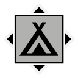

Map
Nearby locations
The 10 closest locations, measured in a straight line between the map markers (1 world unit is 1 metre), with the direction to go from here.
| Location | Kind | Region | Distance | Direction |
|---|---|---|---|---|
 Jaktlägret | Campsite | Mountains | 384 m | NW |
 Sandbo Sandbo | Farm | Farmlands | 386 m | S |
 Rusaberget Lookout Point Rusaberget Lookout Point | Tourist attraction | Mountains | 568 m | SW |
| Uttern Command Bunker | Bunker | Mountains | 653 m | NW |
| Myrbacka | Farm | Farmlands | 693 m | E |
| Jägarstugan | Farm | Mountains | 740 m | NE |
| Anl 144 Vidsele | Airport | South Coast | 765 m | S |
 Rusaberget Radio Mast Rusaberget Radio Mast | Radar station | Mountains | 810 m | W |
| Blackedal | Farm | Mountains | 844 m | N |
 FNIX Research Facility FNIX Research Facility | FNIX site | Farmlands | 850 m | NE |
Safehouse
No safehouse here. The nearest one is Rusaberget Lake Camp (Mountains), 281 m to the north-east.
Loot
The location's files list 28 loot crate spawn points. These are the crates your save counts for this location's loot progress.
Placed loot within 200 m that is closer to Beredskapsförråd 109 than to any other location (from the interactive map's Extra Locations layer).
| Category | Count | Breakdown |
|---|---|---|
| Items | 3 | Boombox 3 |
| Crate spots (map layer) | 28 | Ammo boxes 12, Apparel packs 8, Equipment boxes 7, Weapon boxes 1 |
From the game files
Two crate numbers. The crate spawn points are the loot crate spawn points listed in the location files: what your save tracks for a location's loot progress. The crate spots (map layer) are every crate spot of the interactive map's loot layer within 200 m that is nearer to this location than to any other, whichever game file it comes from, so the two numbers rarely match. Neither means a crate is always there: the game may leave a spot empty.
Missions
No mission text mentions Beredskapsförråd 109 by name. See the missions of the Mountains region.
From the game files
Distances are straight lines on the map between marker positions. A location's area in the game is not a circle, so the 300 m and 200 m radii on this page are a practical approximation, not the game's own borders.